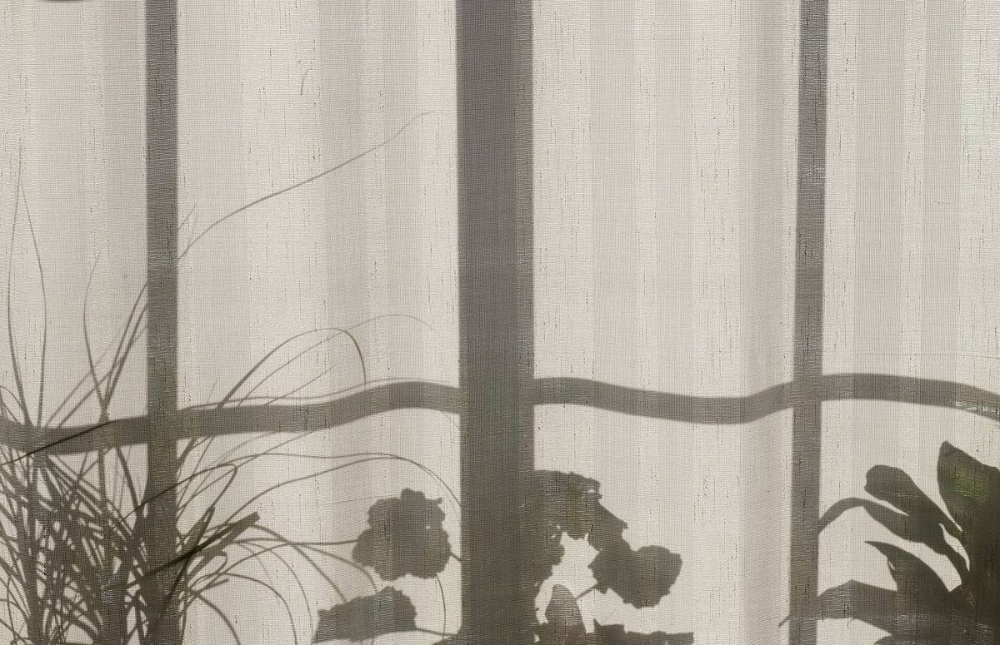
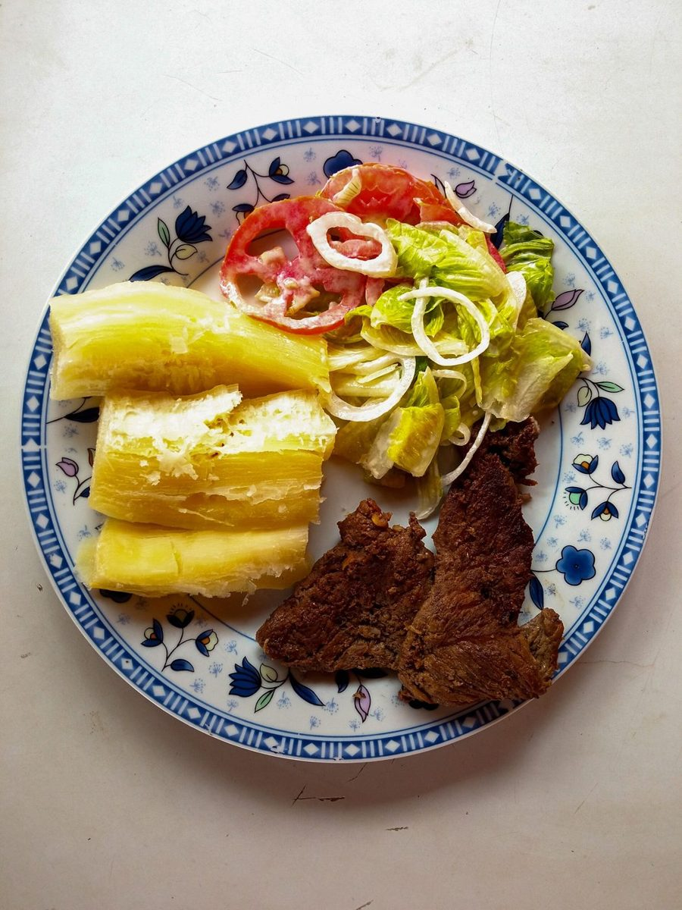
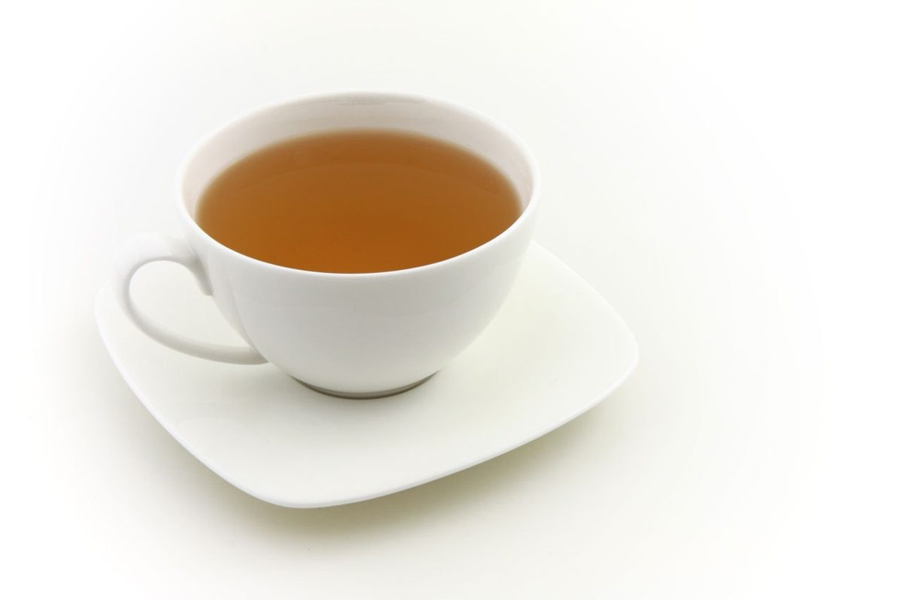
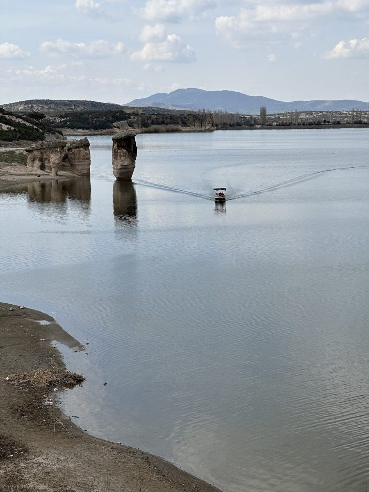
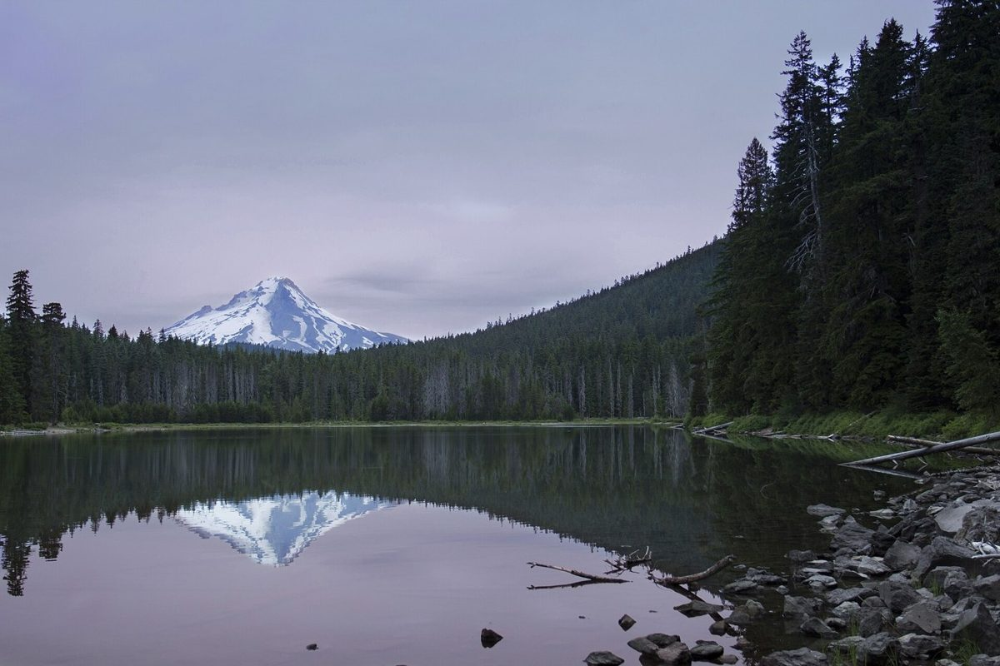

ABOUT
川のそばの、一軒家のカフェ
nano cafe は、山口県岩国市の今津川沿いにある、一軒家を改装したカフェです。2023年7月にオープンしたと紹介されています。
- 白と木目を基調に、アーチ壁や黒い装飾を取り入れたインダストリアルな空間と紹介されています。
- 2階には川面が見えるカウンター席とテラス席があると紹介されています。
- お母様が「喫茶店を開くのが夢だった」と、地元情報誌の取材記事で紹介されています。
上記は地元情報誌「TRYANGLE」の記事(2024年1月号の取材時点)などの公開情報によります。現在の内容はお店にご確認ください。店名の由来は確認できていません。

MENU
お昼のひと皿と、甘いもの
公開されている情報では、季節の食材を使ったプレートランチ、ホットケーキ、ワッフルなどが紹介されています。内容や価格は変わることがあるため、ここでは「準備中」としています。
| ランチ | 季節の食材を使ったプレートランチ(内容は定期的に替わると紹介) |
|---|---|
| スイーツ・ドリンク | ホットケーキ、ワッフル、マフィン、ドリンクなど(詳細は準備中) |
| 価格 | 準備中 |
| 営業時間・定休日 | 準備中 |
| 電話 | 準備中 |
写真はフリー素材のイメージです。お店のメニューではありません。







VOICE
こんなお声が似合うお店(イメージ例)
イメージ例
川の音がやさしくて、ランチのあとも、つい長居してしまいそうです。
イメージ例
木の温もりのある店内で、季節のお皿をいただく時間がほっとします。
イメージ例
テラス席で水辺を眺めながらのお茶が、ごほうびのようでした。
上の3件は制作側が作ったイメージ例で、実際のお客様の声ではありません。